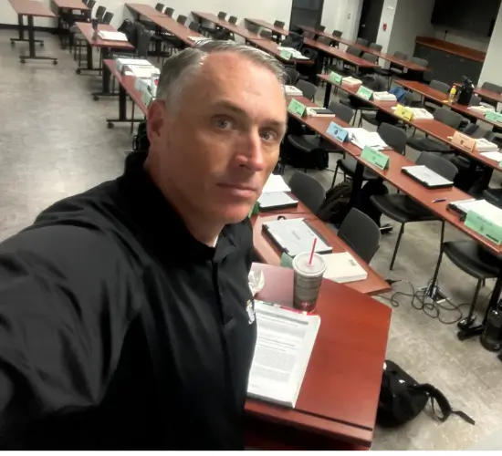

Expert Training, Elite Defense Strategy
Jeff Lotter's Valencia Police Academy Instructor Role: A Deeper Level of Legal Insight
Instructor: Advanced DUI | Crime Scene Processing | Deadly Force | Legal Block | Traffic Stops
Get an Instructor's Edge in CourtValencia State College Police Academy Instructor (2010 - Present)
Building on his extensive field experience as a State Trooper and Deputy Sheriff, Jeff Lotter has served as a distinguished instructor at the Valencia State College Police Academy since 2010. In this ongoing role, he imparts critical knowledge and practical skills to new recruits and veteran officers alike. His commitment to shaping the next generation of law enforcement provides him with an unparalleled, up-to-date understanding of police standards, training methodologies, and legal interpretations—a powerful asset he brings to every client's defense.
Key Instruction Areas & Expertise
- Advanced Level DUI: Instructing on sophisticated DUI detection techniques, the nuances of Standardized Field Sobriety Test (SFST) administration and interpretation, and the latest developments in DUI case law.
- Crime Scene Processing: Teaching methodical approaches to identifying, documenting, collecting, and preserving physical evidence in accordance with strict forensic protocols and legal requirements.
- Deadly Force Encounters: Providing comprehensive instruction on the legal, ethical, and tactical considerations surrounding the use of deadly force, including de-escalation strategies and post-incident procedures.
- Legal Block Instruction: Educating officers on foundational and advanced aspects of constitutional law, search and seizure, arrest procedures, Miranda warnings, evidence handling, and effective courtroom testimony.
- Traffic Stops: Training officers on the proper procedures for conducting lawful and safe traffic stops, vehicle searches, passenger interactions, and citation issuance.

The Instructor's Impact: How Academy Experience Defends You
Jeff Lotter's long-standing role as a police academy instructor offers distinct advantages to his clients:
- Mastery of Current Legal and Procedural Standards: Regularly teaching the "Legal Block" and specialized topics ensures Jeff possesses an expert-level, current understanding of the laws and procedures officers are *required* to follow.
- Deep Insight into Officer Training and Mindset: Knowing exactly how officers are trained to investigate DUIs, process crime scenes, or conduct traffic stops allows him to pinpoint deviations from their training, which can be critical defense points.
- Ability to Deconstruct Complex Investigations: His expertise in teaching crime scene processing and deadly force encounters provides a strong analytical foundation for dissecting complex evidence, police reports, and incident reconstructions.
- Enhanced Cross-Examination Capabilities: Understanding the curriculum, teaching methods, and expected officer knowledge base gives him a significant advantage when questioning officers on the stand about their actions, training, and understanding of the law.
- Anticipating Prosecution Tactics: This instructional role offers continuous insight into how law enforcement and prosecutors are likely to build and present their cases, enabling more proactive and effective defense strategies.
- Identifying Flaws in Evidence and Testimony: A trainer's eye for detail helps Jeff quickly identify inconsistencies, errors, or omissions in police reports, evidence handling, and officer testimony.
When your attorney not only knows the law but also teaches it to the officers who enforce it, you gain a profound strategic advantage. Jeff Lotter’s continued dedication to police education translates directly into a more informed, meticulous, and powerful defense for his clients.